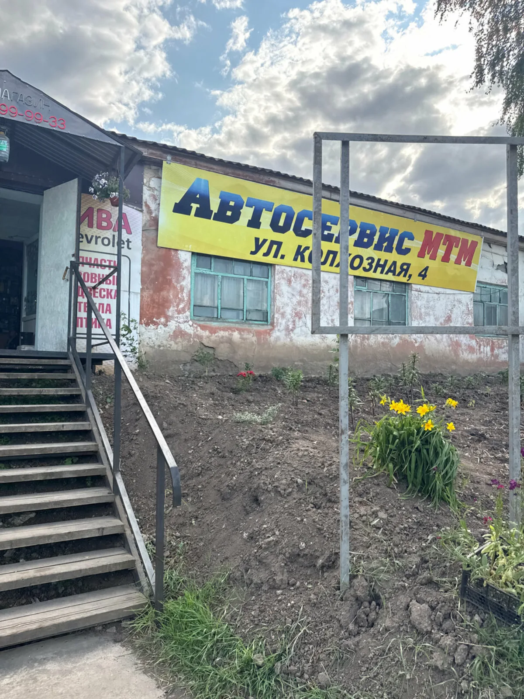
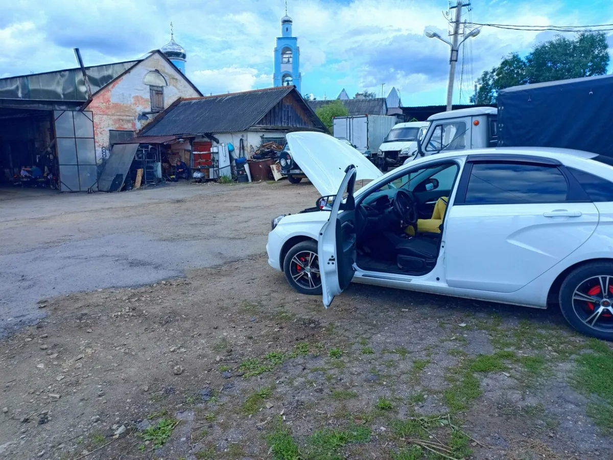
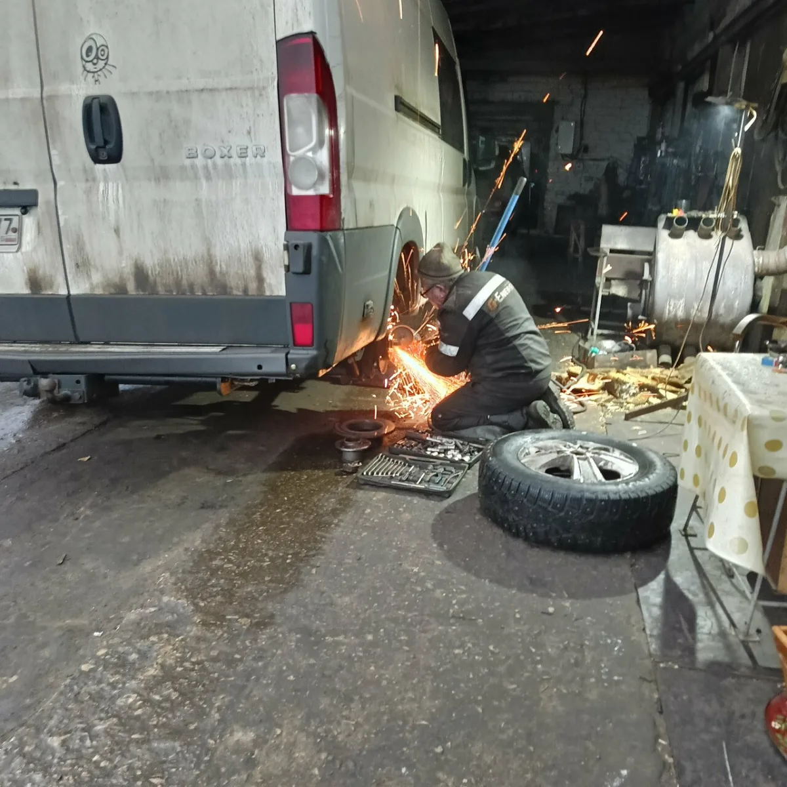
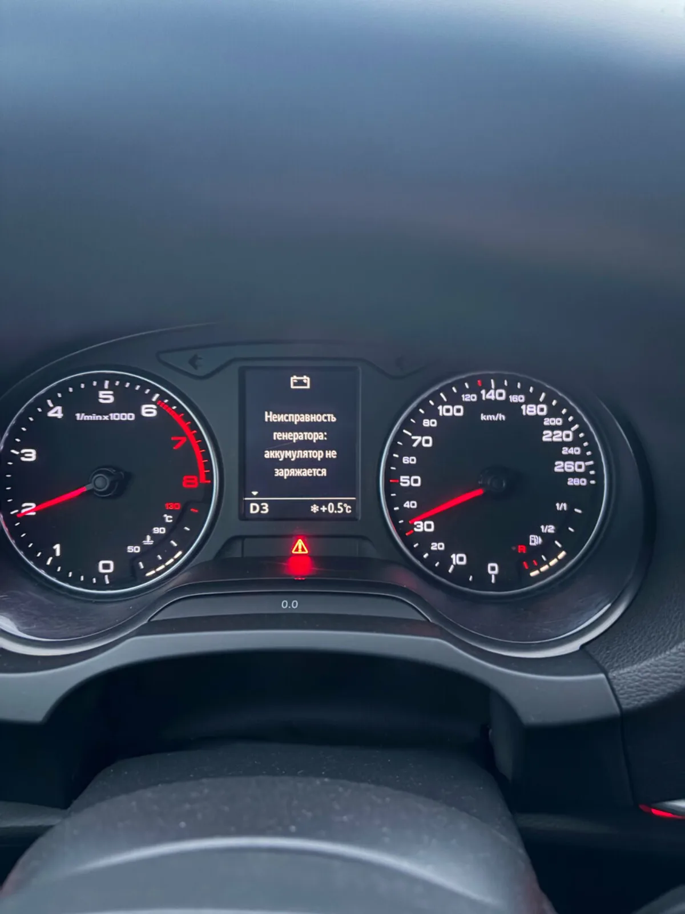

Позвоните и опишите симптомы
Где стоите, что случилось, заводится ли машина, горят ли ошибки. Так мастер быстрее поймет первый шаг.
Ефремов, Колхозная ул., 4 - рядом с М-4
Срочная диагностика, ремонт и запчасти, когда машина подвела в дороге. Помогаем проезжим на М-4 и обслуживаем местные автомобили без лишних обещаний.

Услуги
Ниже - основные работы из карточки МТМ, разложенные по реальным ситуациям: что делаем, когда обращаться и почему это удобно именно здесь.
Осматриваем автомобиль, считываем ошибки, проверяем базовые узлы и помогаем понять, можно ли продолжать путь.
Вы встали рядом с Ефремовым, машина заглохла, пропала тяга, горит ошибка или эвакуатор уже везет авто в сервис.
В отзывах чаще всего благодарят за то, что приняли в сложной ситуации, помогли с эвакуатором, такси и поиском решения.
Проверяем электронные системы, цепи питания, датчики, генераторную группу и причины нестабильной работы.
Машина не заводится, троит, горят ошибки, пропала зарядка, появились сбои после плохой дороги или влаги.
Сначала ищем причину и объясняем ее простыми словами, чтобы ремонт был согласованным, а не случайным набором замен.
Диагностируем, снимаем, ремонтируем или меняем генераторы и стартеры, подбираем нужные детали.
Аккумулятор не заряжается, загорелась лампа АКБ, машина перестала запускаться или заглохла в дороге.
Поломки генератора часто встречаются в историях клиентов МТМ: задача сервиса - вернуть машину к движению без лишней суеты.
Проверяем состояние двигателя, ремня ГРМ, ГБЦ, компрессии и внутренних узлов, подбираем сценарий ремонта.
Порвало ремень, был перегрев, слышны посторонние звуки, ушла мощность или нужен капитальный ремонт.
Не обещаем невозможное за час: сложные работы разбираем по этапам, согласуем детали и сроки до ремонта.
Чистим и ремонтируем элементы топливной системы, форсунки, инжектор, карбюратор и сопутствующие узлы.
Автомобиль дергается, плохо заводится, троит, не набирает обороты или есть подозрение на некачественное топливо.
Сначала проверяем симптомы и источник проблемы, чтобы не менять рабочие детали только из-за похожих признаков.
Диагностируем и ремонтируем подвеску, тормозную систему, рулевое управление, рычаги и шаровые опоры.
Слышны стуки, машину ведет, появилась вибрация, увеличился тормозной путь или предстоит дальняя поездка.
Для трассы это вопрос безопасности: помогаем понять, можно ли ехать дальше или лучше устранить неисправность сразу.
Проверяем коробку передач, сцепление, мост и связанные узлы, выполняем ремонт после согласования объема.
Передачи включаются плохо, сцепление буксует, появились шумы, удары или автомобиль тяжело трогается.
Такие работы требуют точной диагностики: предупреждаем о возможном разборе и согласуем дальнейшие шаги.
Ремонтируем выхлопную систему, гофры, катализаторы и элементы, где требуется сварка.
Машина стала громкой, прогорела гофра, зацепили защиту, оторвался крепеж или нужен быстрый дорожный ремонт.
В карточке отмечены сварочные работы, а в отзывах есть истории, когда такие поломки закрывали быстро и по делу.
Диагностируем и ремонтируем автокондиционер, выполняем заправку, проверяем турбину, патрубки и наддув.
Кондиционер перестал холодить, появилась ошибка, машина потеряла мощность или обнаружены следы масла в патрубках.
Помогаем не просто погасить ошибку, а найти причину, особенно когда впереди еще сотни километров дороги.
Меняем масло, выполняем базовое обслуживание, устанавливаем фаркоп, помогаем с подбором и заказом запчастей.
Нужно подготовить машину к поездке, сделать регулярное ТО, заменить расходники или найти деталь под конкретный автомобиль.
В карточке указаны запчасти под заказ, оплата картой, парковка, Wi-Fi и предварительная запись.
Как помогаем
Где стоите, что случилось, заводится ли машина, горят ли ошибки. Так мастер быстрее поймет первый шаг.
Если своим ходом ехать нельзя, подскажем, как безопаснее доставить автомобиль до сервиса.
После диагностики обсуждаем объем ремонта, запчасти и сроки. Стоимость - после понимания причины.
Почему МТМ
Поломка на трассе редко происходит по расписанию. Поэтому лендинг сразу отвечает на главный вопрос водителя: куда звонить, как быстро найти сервис и чего ждать после диагностики.
Удобно заехать, если поломка случилась по дороге на юг, в Москву или в сторону Воронежа.
Показываем причину и обсуждаем ремонт до закупки деталей и разборки узлов.
Подбираем детали в наличии или под заказ, чтобы сократить простой автомобиля.
Клиенты часто отмечают, что им помогли с эвакуатором, ожиданием, такси и дальнейшим маршрутом.
Отзывы и фото
Мы не переносим длинные отзывы целиком: ниже короткие пересказы типичных ситуаций, которые чаще всего встречаются у клиентов МТМ.
После поломки на 250-м километре машину доставили в МТМ, быстро нашли проблему, объяснили ситуацию и помогли с дальнейшей дорогой.
ЛеонидУ родителей по дороге отказал генератор. После звонка подсказали эвакуатор, приняли машину и через несколько часов помогли вернуться на трассу.
ВикторЕхали ночью, автомобиль заглох рядом с Ефремовым. В сервисе нашли причину, помогли с деталями и закончили работу после обычного графика.
Александр и АннаОперативно поменяли тормозные шланги, не завышали цену и оставили ощущение живого, нормального сервиса.
Нелли


Контакты
FAQ
Да, лучше сразу позвонить. Мастер сориентирует по загрузке, эвакуатору и первому осмотру.
Одна и та же ошибка может иметь разные причины. Стоимость называют после диагностики и согласования объема работ.
Да. Задача - объяснить причину, согласовать работы и только потом заниматься деталями и ремонтом.
В карточке сервиса указана оплата картой. Подтвердите удобный способ оплаты при звонке.
МТМ помогает с подбором и заказом комплектующих. По срочным случаям мастер предложит реальный вариант: ремонт, ожидание детали или безопасный дальнейший маршрут.
По данным карточки Яндекс Карт, график работы ежедневно 08:00-18:00. Если ситуация срочная, позвоните и уточните возможность помощи.
Нужна помощь с машиной?
Если автомобиль можно спасти быстрым ремонтом - подскажем следующий шаг. Если нужна сложная диагностика - объясним, что проверять первым.